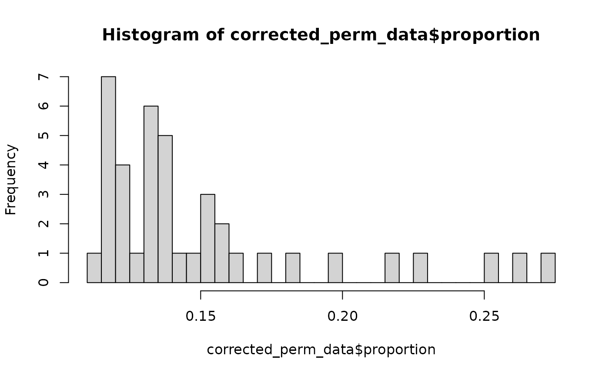

reference permutation distribution
reference_permutation_distribution.RmdIn this vignette we will explore how to generate a permutation distribution of the CIBRA impact scores to assess the statistical significance of the score.
For generating a permutation ditribution with CIBRA, we will only need RNA-seq counts as the definition matrix will be randomly generaterd.
# load transcriptomics data
count_data <- CIBRA::TCGA_CRC_rna_dataThere are a few parameters we have to set to generate the distribution. One is the number of iterations (permutations) we want to run. Moreover, we have to design a case and control grid with the number of cases and control we want to assess. Depending on the use case of the distribution, we want to as closely mimic the cases we will test. As such the case and control list can consist of known examples or be a broad range to have a general distribution. The number of cases/controls doesn’t have much influence on the scores except if you go below the 10 cases.
# set parameters for the reference distribution
control_definition <- "NO_SNV"
confidence <- 0.1 # use the same confidence as used in standard analysis
iterations <- 50 # recommended are at least 1000 permutations to explore the full space
# create lists of different case and control sizes
case_list <- seq(10, ncol(count_data), length.out = 5) # recommended value is at least 20 different case and control values
control_list <- seq(10, ncol(count_data), length.out = 5)
register(SnowParam(4)) # set number of cores to be used
# run permutation screen
CIBRA_res <- generate_permutation_dist(data = count_data, case_list = case_list,
control_list = control_list,
control_definition = control_definition, confidence = confidence,
iterations = iterations, parallel = TRUE, permutation = "sample")
#> [1] "testing: 10and 10"
#> [1] "cases: 10, controls: 10, iteration: 1"
#> [1] "cases: 10, controls: 10, iteration: 2"
#> [1] "cases: 10, controls: 10, iteration: 3"
#> [1] "cases: 10, controls: 10, iteration: 4"
#> [1] "cases: 10, controls: 10, iteration: 5"
#> [1] "Done with cases: 10, controls: 10"
#> [1] "testing: 146.75and 10"
#> [1] "cases: 146.75, controls: 10, iteration: 1"
#> [1] "cases: 146.75, controls: 10, iteration: 2"
#> [1] "cases: 146.75, controls: 10, iteration: 3"
#> [1] "cases: 146.75, controls: 10, iteration: 4"
#> [1] "cases: 146.75, controls: 10, iteration: 5"
#> [1] "Done with cases: 146.75, controls: 10"
#> [1] "testing: 283.5and 10"
#> [1] "cases: 283.5, controls: 10, iteration: 1"
#> [1] "cases: 283.5, controls: 10, iteration: 2"
#> [1] "cases: 283.5, controls: 10, iteration: 3"
#> [1] "cases: 283.5, controls: 10, iteration: 4"
#> [1] "cases: 283.5, controls: 10, iteration: 5"
#> [1] "Done with cases: 283.5, controls: 10"
#> [1] "testing: 420.25and 10"
#> [1] "cases: 420.25, controls: 10, iteration: 1"
#> [1] "cases: 420.25, controls: 10, iteration: 2"
#> [1] "cases: 420.25, controls: 10, iteration: 3"
#> [1] "cases: 420.25, controls: 10, iteration: 4"
#> [1] "cases: 420.25, controls: 10, iteration: 5"
#> [1] "Done with cases: 420.25, controls: 10"
#> [1] "testing: 10and 146.75"
#> [1] "cases: 10, controls: 146.75, iteration: 1"
#> [1] "cases: 10, controls: 146.75, iteration: 2"
#> [1] "cases: 10, controls: 146.75, iteration: 3"
#> [1] "cases: 10, controls: 146.75, iteration: 4"
#> [1] "cases: 10, controls: 146.75, iteration: 5"
#> [1] "Done with cases: 10, controls: 146.75"
#> [1] "testing: 146.75and 146.75"
#> [1] "cases: 146.75, controls: 146.75, iteration: 1"
#> [1] "cases: 146.75, controls: 146.75, iteration: 2"
#> [1] "cases: 146.75, controls: 146.75, iteration: 3"
#> [1] "cases: 146.75, controls: 146.75, iteration: 4"
#> [1] "cases: 146.75, controls: 146.75, iteration: 5"
#> [1] "Done with cases: 146.75, controls: 146.75"
#> [1] "testing: 283.5and 146.75"
#> [1] "cases: 283.5, controls: 146.75, iteration: 1"
#> [1] "cases: 283.5, controls: 146.75, iteration: 2"
#> [1] "cases: 283.5, controls: 146.75, iteration: 3"
#> [1] "cases: 283.5, controls: 146.75, iteration: 4"
#> [1] "cases: 283.5, controls: 146.75, iteration: 5"
#> [1] "Done with cases: 283.5, controls: 146.75"
#> [1] "testing: 10and 283.5"
#> [1] "cases: 10, controls: 283.5, iteration: 1"
#> [1] "cases: 10, controls: 283.5, iteration: 2"
#> [1] "cases: 10, controls: 283.5, iteration: 3"
#> [1] "cases: 10, controls: 283.5, iteration: 4"
#> [1] "cases: 10, controls: 283.5, iteration: 5"
#> [1] "Done with cases: 10, controls: 283.5"
#> [1] "testing: 146.75and 283.5"
#> [1] "cases: 146.75, controls: 283.5, iteration: 1"
#> [1] "cases: 146.75, controls: 283.5, iteration: 2"
#> [1] "cases: 146.75, controls: 283.5, iteration: 3"
#> [1] "cases: 146.75, controls: 283.5, iteration: 4"
#> [1] "cases: 146.75, controls: 283.5, iteration: 5"
#> [1] "Done with cases: 146.75, controls: 283.5"
#> [1] "testing: 10and 420.25"
#> [1] "cases: 10, controls: 420.25, iteration: 1"
#> [1] "cases: 10, controls: 420.25, iteration: 2"
#> [1] "cases: 10, controls: 420.25, iteration: 3"
#> [1] "cases: 10, controls: 420.25, iteration: 4"
#> [1] "cases: 10, controls: 420.25, iteration: 5"
#> [1] "Done with cases: 10, controls: 420.25"We can visualize the distribution as shown below. This is however a limited distribution as we have only performed 50 permutations. For statistical testing 1000 permutations are recommended.
# extract the perm data from the results
perm_data <- CIBRA_res[[1]]
# save the permuation data for later testing
# visualize the proportion
hist(perm_data$proportion, breaks = 25)
# visualize the significant area
hist(perm_data$significant_area, breaks = 25)
# the significant area still contains invalid valuesThe proportion can indicate if the p-value distribution is invalid. Here below we will remove the entries with an invalid impact score, which are those where the proportion is below the threshold (confidence) we have set.
# remove the invalid values which have a proportion below 0.1
corrected_perm_data <- perm_data[perm_data$proportion >= 0.1,]
hist(corrected_perm_data$proportion, breaks = 25)
hist(corrected_perm_data$significant_area, breaks=25)